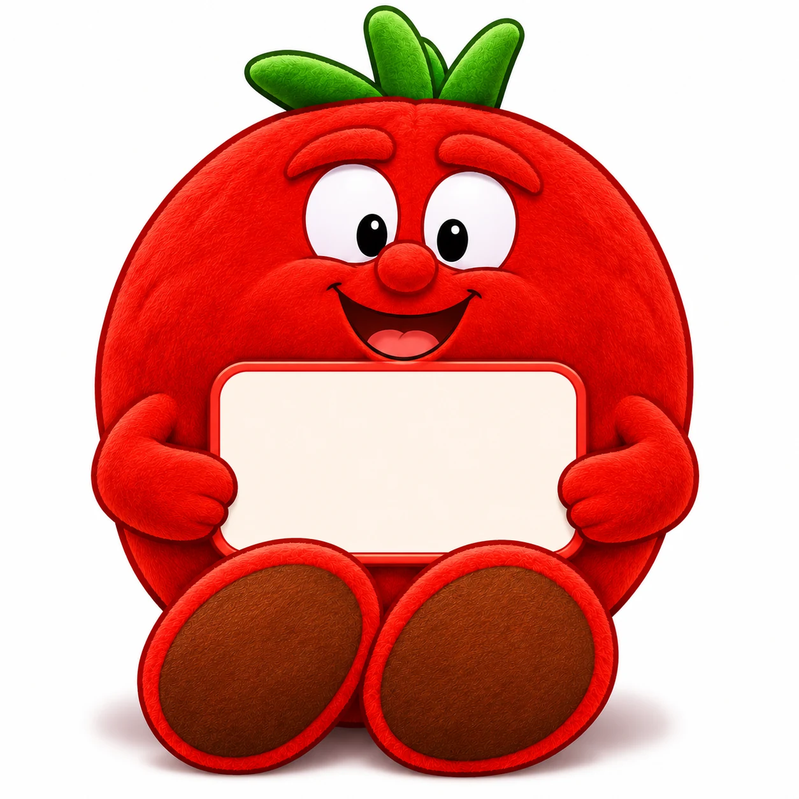

🐾 IL TUO ANGOLO FELICE
È ora di concentrarsi!
Mavis è qui per farti compagnia 💗

🐾 SESSIONE DI CONCENTRAZIONE 🐾
25:00
Pronta a iniziare?
Mavis appare ogni 5 minuti di studio 🐾
Mavis crede in te! ♡
🎧 Audio di sottofondo automatico durante il timer.
Il timer continua a contare anche se chiudi la pagina. Tieni aperta l'app per sentire il suono finale.
🎯 Obiettivi di oggi
0 / 0🍅 I tuoi progressi
Ogni piccolo passo conta!
🐶 «Sei bravissima, continua così!»
🏆 Prossimo trofeo
🎯 I tuoi obiettivi di oggi
Scrivi quello che vuoi realizzare. Puoi completare gli obiettivi quando vuoi.
🏆 La collezione di Mavis
Ogni obiettivo completato ti avvicina a un nuovo premio!
🍅
0Pomodori completati🎯
0Obiettivi completati⏱️
0Minuti di concentrazione🏆
0Trofei sbloccati🐾 Il tuo percorso
Mavis è pronta a festeggiare ogni tuo progresso!
⚙️ Personalizza il tuo Pomodoro
I dati restano salvati in questo browser/dispositivo. Per ora i progressi non si sincronizzano tra iPhone e iPad.